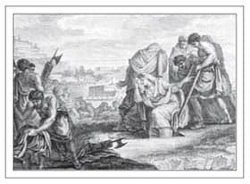

Makbul Genelevler
Atinalı devlet adamı ve kanun yapıcı Solon, M.Ö. 6. yüzyılda Atina’daki ekonomik ve ahlaki çöküş karşısında dehşete kapılmış ve devlet tarafından işletilen genelevler kurarak bu duruma bir çözüm getirmeye çalışmıştır.
Başka bir yurttaşın karısıyla değil de bir fahişeyle yapıldığında zina daha affedilebilir bir günah olarak görülmüştür. İmparatorluğun her yerinden hem kadın hem erkek yabancı köleler getirtilmiş, herkesin karşılayabilmesi amacıyla bilhassa düşük bir ücret belirlenmiştir. Genelevlerin vergi ödemesi ve bu durumun şehrin hazinesine yaraması ise başka bir avantaj olmuştur.
Arkeologlar, bu genelevlerden birinde, tabanına kabartmayla ‘Beni Takip Et’ yazılmış, yürüdükçe toprakta ayartıcı bir mesaj bırakan bir çift sandal bulmuşlardır.
Aman Doktor, Canım Doktor
Hipokrat, Batı tıbbının babası olarak kabul edilir. Bugün doktorlar hâlâ onun koyduğu prensiplere dayanan bir yemin olan Hipokrat Yemini’ni eder, böylece mesleklerini onurlu bir şekilde icra edeceklerini ifade etmiş olurlar. Çalışmalarını M.Ö. 4. Yüzyıl’ın başlarında yapan Hipokrat, tıpta çığır açmış ve birçok ilginç bilimsel teori geliştirmiştir.
Buna rağmen Hipokrat’ın orgazm üzerine oldukça tek taraflı ve erkeklerin lehine düşünceleri vardır. Dönemin diğer doktorları gibi o da kadınların dişi menisi ürettiğine inanırdı. Aynı zamanda kadınların seks sırasındaki zevkinin sadece erkeğin boşaldığı zaman doruk noktasına ulaştığını düşünürdü. Bir başka teorisine göre (herkesin açıkça tercihi olan) erkek çocuk sahibi olmanın tek yolu önce erkeğin orgazm olmasıdır, kadının erkekten önce orgazm olması durumunda çocuk maalesef kız olacaktır.
Kadın Dokunuşu
Antik Yunan’da evli kadınların sinirli ve cinsel bakımdan mutsuz olmalarına belki de şaşmamak gerek. Kimileri bir sevgili bulmak için bir kadın pezevenge başvurur, ancak yakalanmaları halinde cezaları büyük olurdu. Bununla birlikte daha az risk arz eden seçenekler de yok değildi. Gizli saklı bir ahlaksızlıktansa, ipi sağlam kazığa bağlayan bir çözüm olarak mastürbasyon yeğ tutulurdu. Ayrıca kayıtlar, tahtadan ya da içi doldurulmuş deriden yapılmış ve iyice zeytinyağına bandırıldıktan sonra kullanılan dildoların1 varlığına işaret eder.
Kadınlar çareyi birbirlerinde de aramışlardır. Yunanlılar lezbiyenlere genellikle ‘sürtünmek’ fiilinden türemiş olan tribas kelimesiyle hitap ederlerdi. Yine de Latince homo’dan2 kelimesinden değil de, Yunanca ‘aynı’ anlamına gelen homos’tan kelimesinden elde edilmiş ‘homoseksüel’ kelimesi de hem erkekler hem de kadınlar için geçerliydi. Lezbiyen kelimesiyse M.Ö. 6. yüzyılda kadınlar hakkında şiirler yazmış olan Yunan şairi Sappho’nun memleketi Lesbos’tan3 esinlenilerek 19. yüzyılda türetilmiştir.
Hoş Kalçalar

Antik Yunan’da bir dansçı
Antik Yunan’da kadınlara karşı tutum zaman içinde değişti. Sanat ve edebiyat kadın ile erkek arasındaki romantik aşkı yansıtmaya başladı ve vazo resimleriyle heykellerde kadın vücuduna verilen değer ortaya kondu. Callypgian denilen, güzel kalçalı kadınlar daha fazla rağbet görürdü. Kadınlar bazen daha kıvrımlı görünebilmek için kalçalarına destekleyici yastıkçıklar koyarlardı.
İç Gıdıklayıcı Masallar
Bu hikayelerin zamanında en az günümüzdekiler kadar dedikodusever olan okuyucuları dehşete düşürüp heyecanlandırmak için abartılıp abartılmadığı bilinmez, ancak Antik Çağ yazarlarına bakılırsa, Yunanlılar komşularının seks hayatına karşı doymak bilmez bir merak duymuşlardır.
Milattan önce 5. yüzyılda Herodot Tarihi isimli eseri yazan Herodot, aynı zamanda bir kaşif, gezgin ve hikaye anlatıcısıydı. Gördüğü harikaları, gezdiği yerleri ve tanık olduğu tuhaf gelenekleri yaşar gibi tasvir etmiştir. Örneğin, Mısırlılar’ın güzel kadınların vücutlarını öldükten sonra birkaç gün, yani ceset çürümeye başlayana kadar gömmeden tutma âdetlerini yorumlamıştır. Görünüşe göre bu uygulamayla mumyalayıcılar arasında yaygın olan nekrofilinin önlenmesi amaçlanılırmış. Herodot ayrıca Mısır’daki ayinlerde yaşanan vahşeti ve Hazar Denizi yakınlarında yaşayan Massaget kabilesinin doymak bilmez cinsel arzularını anlatmıştır. Bu halkın erkeklerinin hepsinin birer karısı olduğu, ancak kadınların ‘ortak tutulmuş’, yani cinsel objeler olarak erkekler arasında paylaşılmış olabilecekleri söylenmiştir. Seksten sonra cinsel organlarını tütsü buharıyla dezenfekte eden Babillilerin de kadınlarını hayatlarında bir defaya mahsus olmak üzere, (Herodot’un Afrodit olduğunu düşündüğü) Mylitta tapınağında tanrıçaya bir sunu olarak tamamen yabancı erkeklerle cinsel birleşmeye göndermek gibi tuhaf bir gelenekleri vardır.
Roma’da Romalı Gibi Davran
Romalı kadınlar Yunanlı kadınlara göre daha özgürdüler. Varlıklı kadınlar kesinlikle daha büyük bir serbestlik içindeydiler; boşanma ve kendi mallarının bir kısmını ellerinde tutma haklarının yanı sıra, ziyafetlere katılabilir ve erkeklerle özgürce konuşabilirlerdi. Ancak, kadınlar eş ve fahişe olarak iki kesin kategoriye ayrılırlardı.
M.Ö. 1. Yüzyıl’da yazan Romalı şair ve Filozof Lukretius, Doğa Üzerine isimli epik eserinde döllenme için en iyi sonuç veren pozisyonun ‘rahmi yukarı doğru kaldırılmış’ bir kadına arkadan yaklaşmak olduğunu yazmıştır. Kadının birleşme sırasında hareket etmesinin tamamen gereksiz olduğunda ısrar etmiş; hatta hareket etmenin döllenmeyi engellediğini ve fahişelerin seks esnasında bu yüzden kıvrandığını iddia etmiştir. Zaten seksten zevk almak evli kadınların haddine düşen bir şey olarak görülmemiştir. St Jerome’ye göre, Lukretius bir aşk iksiri içtikten sonra delirmiş ve intihar etmiştir.
Bir defne çelengiyle çerçevelenmiş Lukretius
Erkekler İçin Tek Kural
Sadakatsiz kocası İason’u cezalandırmak için çocuklarının ölümünü planlayan Medea
Kadınların zina yapması kesinlikle yasaktı, ancak erkekler için aynı şey geçerli değildi; her ne kadar diğer erkeklerin karıları ve bakire kızları yasak bölge olsa da, fahişeler ve kölelerle birlikte olmaları meşruydu. Roma İmparatorluğu’nun erken dönemlerinde, zina yapan kadınlar ölümle cezalandırılmış, ancak bu ceza sonradan sürgün ve malının üçte birine el koymaya indirilmiştir. Kocaların günahkar karılarını affetmelerine izin verilmemiş, aksi takdirde onlar da cezalandırılmıştır.
Zina yasasından muaf tutulmak uğruna, katı kurallardan kaçmak isteyen bazı evli kadınlar kendilerini fahişe olarak kaydettirmişlerdir.
İmparatoriçe’nin Genelevi
İmparator Claudius’un karısı İmparatoriçe Valeria Messalina’nın, kendi açtığı genelevde takma bir isimle bir fahişe olarak çalıştığına dair hikayeler, diğer tanınmış yazarların yanı sıra Tacitus, Suetonius ve Büyük Plinius tarafından da anlatılmıştır. İmparatoriçe, varlıklı Romalı kadınlar için grup seks partileri düzenlemiş, fahişelerle tüm gece seks yapma yarışlarına girmiş, bu yarışları da bazen bir gecede yirmi beş farklı kişiyle sevişerek kazanmıştır. Messalina’nın seksi, iktidar alanını genişletmek ve politikacıları tahakkümü altına almak için kullandığı söylenmiştir. Messalina ayrıca konumuna bir tehdit oluşturduğunu düşündüğü herhangi birini sürgüne yollatması ya da idam ettirmesi konusunda Claudius’u ikna etmiştir. İşin ilginci daha sonra Claudius, Messalina’yı idam ettirmiştir.
Messalina uçta bir örnek teşkil etse de dikkate değer sayıda kadın kendini fahişe olarak kaydettirmiş olacak ki, M.S. 19 yılında İmparator Tiberius’un da desteğini arkasına alan Senato, bir Roma şövalyesinin eşi olan ya da onun soyundan gelen herhangi bir kadının fahişe olarak çalışmasını yasaklayan bir kanun çıkarmıştır.
Sapkınlık
Antik Roma’da üç tür evlilik vardı. Bunlardan ikisi değişen seviyelerde karmaşıktı; gittikçe popüler olan üçüncüsü ise sadece bir sene kesintisiz olarak birlikte yaşama şartını koşuyordu, ancak herhangi bir kesinti senenin tekrar başlamasına sebep oluyordu. Boşanmak da kolaylaşmıştı. En kesin boşanma sebebi zinaydı, ancak ahlaki çözülme, sarhoşluk ve kısırlık da boşanmak için geçerli sebepler arasında sayılıyordu.
Jül Sezar’ın evlatlık oğlu ve halefi İmparator Augustus, karısı Scribonia’dan ‘sapkınlık’ sebebiyle boşanmıştır. Esas meseleyse Scribonia’nın Augustus’tan altı aylık hamile olan on yedi yaşındaki yeni metresi Livia Drusilla’dan hoşlanmaması ve onu onaylamamasıdır.
Üst sınıf Romalı aileler bazen çiftleri siyasi ya da hanedanla ilgili sebeplerden dolayı da boşanmaya zorlardı. Örneğin, Augustus’un kızı Julia, Tiberus’la evlenebilmesi için kocasından boşanmaya zorlanmıştır. Tiberus ise bu evliliği yapabilmek için sevdiği karısı Vipsania’dan boşanmaya ikna edilmiştir. İşin ilginci, Vipsania da Julia’nın üvey kızıdır.
Saç ve Makyaj
Antik Roma’da güzellik sırları oldukça fazlaydı. Kadınların kıyafetleri Yunanlılarınki kadar açık değildi, zira esas makyaja önem verilirdi. Makyaj yüz temizleme kremi ve fondötenle başlar; rastık, göz farı ile devam eder ve yanaklarla dudakların kırmızı boyalı macunla renklendirilmesiyle tamamlanırdı. Klasik dönem kadınları makyaj fırçasının erbabıydı, ancak henüz suya dayanıklı makyaj malzemeleri geliştirilmemişti: Roma yazının sıcağında ya da yağmurda makyajlar erir, kadınların yanağında palyaçolarınkine benzer kırmızı ve siyah izler bırakırdı.
Saçlar katlanıp kıvrılarak lüle yapılırdı. Kırlaşmış saçlardan ve kırışıklıklardan günümüzde de olduğu gibi hoşlanılmaz, bunlar saklanmaya çalışılırdı. Kır saçlar boyanır ya da cımbızla çekilirdi. Got ya da Sakson kabilelerinin kadınlarınki gibi kızıl ya da sarı saçlar oldukça modaydı. Saç boyalarında afyon ruhu ve haşhaş ile karıştırılmış akrep ve kuş kafasından öküz safrasına kadar tuhaf maddeler kullanılırdı. Hindistan’dan getirilen saçlarla yapılan pahalı peruklarsa bir başka seçenekti.
Makyaj ve saç tamamlandıktan sonra, parfümlü yağlar ve mücevherler de çekici bir dişilik katmak için bolca kullanılırdı. Romalı erkeklerin gözlerinin hep dışarıda olmasına belki de şaşırmamak gerek.
Cazibeli Bir Tebessüm
Diş beyazlatma günümüzde ortaya çıkmış bir uygulama değildir. Daha genç ve çekici görünme çabası içindeki Romalılar da dişlerini beyazlatmak için keçi sütü ve idrardan oluşan bir karışım kullanırdı.
Roma Hamamları
Klasik dönem heykellerinden anlaşılacağı gibi, Roma modası kadınların kasık kıllarını tamamen tıraş etmesi ve diğer bölgelerdeki kıllarını aldırmasından yanaydı. Bu durum bir dereceye kadar erkekler için de geçerliydi. Tüylerin kısaltılması bir hijyen ve temizlik göstergesi olsa da, eşcinsel erkekler tıraş olmayı cinsel bir davetiye olarak da kullanırlardı. Hamamlar Romalı erkeklerin birbirlerini “kesebilmeleri” için birçok fırsat sunardı.
Roma’daki yaşamı hicveden zekice vecizeleri ile tanınan şair Martial, erkeklerin takım taklavatları hakkında birkaç açık saçık yorumda bulunmuştur: ‘Penisin de burnun da o kadar büyük ki Papylua, yaydığın kokudan sertleştiğin anlaşılıyor.’ Romalı general Labienus’a da şu soruyu sormuştur: ‘Göğsün, bacakların ve kollarındaki kılları alıyorsun; tıraşlı penisinin etrafıysa kısacık tüylerle kaplı; bunların hepsini metresin için yapıyorsun, biliyoruz. Peki, Labienus, göt deliğini tüylerden kimin için arındırıyorsun?’
Antik Yunan’daki gibi Roma’da da varlıklı adamların genç erkek dostlarının olduğu bilindik bir şeydi, ayrıca birden fazla imparatorun yaptığı açılımlar da bir dereceye kadar cinsel özgürlüğü teşvik etmişti.
Her Şey Boş
Jül Sezar hem asker, hem devlet adamı, hem de yazardı; Roma’nın lideri, Britanya ve Galler’in fatihi, çeşitli sosyal ve siyasi reformların öncüsüydü; jülyen takviminin yaratıcısı ve M.Ö. 15 Mart 44 tarihinde suikaste kurban gidene kadar ‘Hayat Boyu Diktatör’dü. Tüm zamanların en büyük askeri kumandanlarından biriydi ve başarılarının haddi hesabı yoktu. Yine de onun da kendine göre güvensizlikleri vardı.
Bugün Sezar’ın büstlerini ve özenle kesilmiş saçlarını görenler tasvir edilenin kim olduğunu ânında anlar. Oysa aslında giderek açılan alnı Sezar’ı rahatsız ediyordu. Kelini kapatmak için saçlarını düzenli olarak kestiriyor ve açıklığı mümkün oldukça gizleyebilmek için defne yapraklarından bir taç takıyordu. Sakallarını zaten düzenli olarak kesiyordu, ama söylenene bakılırsa bir de yüzünde ve vücudundaki istenmeyen tüyleri cımbızla alıyordu.
Sezar’ın zamanında bölük komutanlarının erkekliklerini ve imparatorluğa bağlılıklarını göstermek üzere meme uçlarını deldirmesi âdettendi. Gücünün ve ordusuyla birlikteliğinin bir göstergesi olarak Sezar da meme uçlarını deldirmişti. Cicero, Plutarkhos, Suetonius ve ayrıca askerlerinin müstehcen şarkılarına göre Sezar doyumsuz bir âşıktı. Üç kere evlenmiş ve birçok ilişkisi olmuştu; gönül maceralarına kendisinden Caesarion (Küçük Sezar) isimli bir erkek çocuğu sahibi olan Kleopatra da dahildi. Heteroseksüel olarak tanınmasına rağmen, M.Ö. 80 civarında, yani yirmisinde bir delikanlıyken yaşadığı eşcinsel bir ilişki söylentisi, hayatının sonuna kadar peşini bırakmadı. Genç Sezar, Roma’nın Pontus’lu Mithridates’e karşı desteklediği Bitinyalı Kral IV. Nikomedes’ten bir filo almaya gönderilmişti. Lakin Sezar, Nikomedes’in sarayında gereğinden uzun kalmış ve dolayısıyla kralın yatağını paylaştığı yönünde dedikodulara sebep olmuştu. Seneler sonra bile Sezar’la ‘Bitinya Kraliçesi’ diye dalga geçilmeye devam edilmiş ve askerlerin şarkılarında ondan ‘bir kralın kıymetlisi’ diye bahsedilmiştir.
Gerçek ne olursa olsun, Memmius ve Cicero dedikodulara inanmış, daha sonra Suetonius da bu hikayeyi dile getirmişti.
Vesta Bakireleri

Bekaret yeminini bozmaları halinde Vesta Bakireleri’nin cezaları diri diri gömülmekti
Aile tanrıçası Vesta’ya hizmet etmek ve kutsal ateşi korumak için Altı Vesta Rahibesi seçilirdi. Bunlar, asil Roma ailelerinin kızlarından oluşan bir liste içerisinden seçilirdi. Kızlar altı ile on yaşları arasında göreve başlar, otuz yıl boyunca tanrıçaya hizmet eder, bu süre boyunca da namuslarını korurlardı. Bakire olmadıklarına dair en ufak bir ipucu, yeraltındaki bir odada yavaş bir ölüme terk edilmelerine sebep olurdu.
Bu, ciddiye alınan bir görevdi: Roma’nın kaderi ve zenginliğinin Vesta’nın ellerinde olduğuna inanılırdı. Ne zaman yeni bir bakire alınacak olsa, birçok aile kızlarının ismini, daha çok mal ve mülklerinin devletin eline geçmesini önlemek endişesiyle, liste dışı bırakmaya çalışırdı.
Kaba Şiirsellik
Priapos’a tapınma
Her ne kadar sofistike olurlarsa olsunlar, Romalılar’ın kaba saba bir mizah anlayışları vardı.
Priapos, abartılı bir ereksiyonla resmedilen, ikincil bir Yunan bereket tanrısıydı. Bu tanrının heykelleri, hırsızları korkutmak için Roma bahçelerine dikilirdi. Heykellerin yanına genelde açık saçık bir mizahla yazılmış uyarılar iliştirilirdi. Bu uyarılar Priapeia isimli bir şiir antolojisinde toplanmıştı. Örneğin: ‘Oğlum dikkat, yanarsın; kızım dikkat, sikilirsin; cezaların en fenası da sakallı hırsıza gelsin.’ Şair Martialis bile bu seçkiye katkıda bulunmuştur: ‘Eğer o haydut değneğin şu asmanın en ufak bir filizine bir değsin, ister hoşuna gitsin ister gitmesin, bu selviden değnek de sana girsin de içine incir ağacı diksin.’
Priapos’un resimleri de günümüze kadar gelmiştir; bunlardan en iyi bilinenleri müşteriler için bir uğur sembolü olarak görüldüğü Pompeii’deki Vettii Evi’nde ve Herkulaneum’da bir bardadır.
Açık saçık başka mısralar da, aslında ahlaksız dizeleriyle değil de görkemli aşk şiirleriyle tanınan Catullus’un kuş tüyü kaleminden çıkmıştır. Hatta şiirlerinden biri 2009 yılında, bir işveren sözde bu şiiri bir cep telefonu iletisinde alıntıladığı için açılan bir cinsel ayrımcılık davası haberine konu olmuş, ancak BBC tarafından çevrilemeyecek kadar aşırı bulunmuştur.
Bu şiir Catullus’a hanım evladı diyen ‘edilgen’ Aurelius ve ‘oğlancı’ Furius’a ithafen yazılmış olan XVI numaralı şiirdir ve şöyle biter:
Erkekliğimden kuşku mu duyuyorsunuz
Binlerce kez öpüştüğümü okudunuz diye?
Ben becereceğim ikinizi de,
Seni kıçından düzeceğim, edilgen Aurelius,
Seni de ağzından, oğlancı Furius.4
Bu, Aurelius’un Catullus’un şen şakrak ama ağır hakaretlerine maruz kaldığı ilk örnek değildir:
Senden korkuyorum ve senin o yarrağından,
O ki alacaklıdır hem iyi hem kötü oğlanlardan.
İlginçtir ki başka bir şiirde Catullus, Aurelius ve Furius’tan yoldaşları olarak söz eder.
Bacchanalia Şenliği Suçları
Titian’ın ‘Bacchus ve Ariadne’si
Romalılar, Yunan tanrısı Dionysos’u kendi bereket tanrıları Liber ile birleştirmiş ve Bacchus adında bir tanrı olarak benimsemişlerdir; tıpkı Priapos gibi.
Bacchus kültü öncelikle kadınlar için, senede bir kere gündüz saatlerinde yapılan üç günlük bir festival olarak düzenlenirdi, ancak daha sonraları ayda beş kere yapılan, herkese açık tam teşekküllü bir kutlama haline geldi. Başlangıçta meşalelerin aleviyle aydınlanan bu kabul töreni genç erkek ve kadınlar için sınırsız eğlence anlamına gelirken, kısa zaman içinde ayyaşlık ve Tiber Nehri kıyılarında sabahlara kadar çılgın müziklerle dans etmek için bir bahane halini aldı. Kontrol dışı davranışlardan ve kırbaçlamadan adam asma törenlerine kadar uzanan korkunç âdetlerle bezenmiş Bacchus ayinleri, kasti suçları ve hatta cinayetleri bile geride bırakıyordu.
Aebutius adında bir adamın dolandırılıp sonra öldürüleceği bir suikast planı, yetkililerin dikkatini çekmişti. Aebutius’un servetini çarçur eden üvey babası, bu suçunun üstünü genç adamı Bacchanalia şenliklerinde öldürerek örtmeyi planlıyordu. Genç oğlunu bu başlangıç ritüeline gitmesi için ikna eden annesi de bu komploya ortak olmuştu. Neyse ki Aebutius’un metresi, akıllı ve görmüş geçirmiş bir fahişe olan Hispala Faecenia, şüphelenmişti. Vaka şikayet edildi, soruşturma başlatıldı ve kovuşturmaya geçildi.
Tarihçi Titus Livius, bu Bacchus skandalında 7000 kişinin tutuklandığını yazmıştır. Kimi erkekler idam edilmiş, kimileri hapsedilmiş, kadınlarsa daha yumuşak cezalar almış ve akrabalarının gözetimine verilmiştir. M.Ö. 186’da Senato, ayinleri Roma’da izne tabi küçük toplantılar haline getirmiş, imparatorluğun diğer yerlerindeyse toptan yasaklamaya çalışmıştır.
Bacchus kültü Jül Sezar’ın zamanında daha ılımlı bir halde yeniden canlanmıştır. Marcus Antonius’un bir tören alayıyla kutlanan bu karnavalların sıkı bir takipçisi olduğu söylenir.
Etrafına Bereket Saç
Bu kadar çok yasadışı çiftleşme olurken, hamileliği önlemek Romalılar için bir takıntı haline gelmişti. İnsan fizyolojisi hakkında ayrıntılı bilgilere sahip olan Romalıların doğum kontrol hakkındaki fikirleriyse pek yaratıcıydı.
Tanınmış doktor Soranus, doğurganlığın yüksek olduğu günlerde ya cinsel oruç tutulmasını ya da anal seks yapılmasını tavsiye eder; iş işten geçtiyse de bal, yağ ve reçineye batırılmış yün tıkaçlar kullanmalarını ya da astrenjan çözeltiler içmelerini önerirdi. Dioscorides, karabiber kullanımını önerirdi. Vajinal temizlikten sonra hapşırmak da yaygınlaşmış bir doğum kontrol yöntemiydi.
Genelde çok mantıklı ve ölçülü bir yaklaşımı olan Büyük Plinius’un önerisi ise cinsel arzuları azaltmaktı. Fare pisliği, salyangoz ya da güvercin dışkısı ve vahşi kara boğaların üzerinden toplanan kenelerin kanından oluşan bir merhemin cinsel bölgelere uygulanması, tavsiyelerinden biriydi. Bu tür uygulamaların, Plinius’un hedeflediği anlamda olmasa bile, işe yaradığını görmek çok da zor değildir.
Diğer yandan, doğum kontrolüne ihtiyaç duymak bir yana, Romalılar düşen doğum oranı ve azalan nüfuslarına kafayı takmışlardı. Antik Yunan’da olduğu gibi Roma’da da geniş ailelere nadiren rastlanırdı. Bunun bir sebebi yüksek orandaki bebek ölümleri olsa da, aşırı miktarlarda alkol tüketiminin, borulardan ve pişirme kaplarından emilen kurşunun ve sıcak hamamlara yapılan günlük ziyaretlerin de muhtemelen payı vardı.
İmparator Augustus bu duruma dulların iki yıl, boşanmışların da on sekiz ay içinde tekrar evlenmesini emrederek çözüm getirmeye çalışmıştır. Mülk ve miras kanunları da evliliği cazip hale getirmek için değiştirilmiş, hayatta kalan üç çocuk yapan çiftlere maddi ödüller teklif edilmiş ve sınıflararası evlilik yasakları gevşetilmiştir. Ancak nafile; Roma nüfusu azalmaya devam etmiştir.